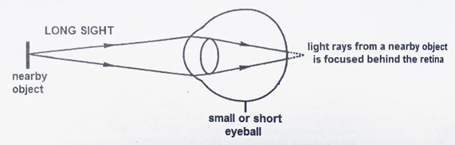
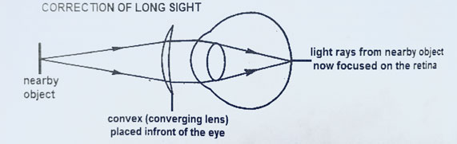
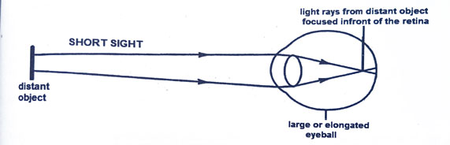
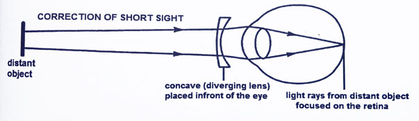
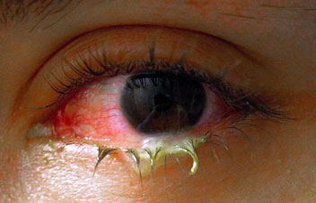

Learning Objectives
By the end of this lesson, you should be able to:
- Define long-sightedness and explain how it can be corrected
- Define short-sightedness and explain how it can be corrected
- Define presbyopia and explain how it can be corrected
- Define conjunctivitis and explain its causes
- Define glaucoma and explain how it can be treated
- Define cataract and explain how it can be treated
- Define astigmatism and explain how it can be corrected
Eye defects and corrections
Long sightedness (Hypermetropia)
- Long-sightedness is a condition where distant objects are seen clearly, but nearby objects appear blurry.
- It occurs when the eyeball is too short, causing light rays to focus behind the retina instead of on it.
- Long-sightedness can also occur if the lens of the eye is not curved enough to focus light rays on the retina.

Long-sightedness
Correction of long-sightedness
Long-sightedness can be corrected using convex lenses, which converge light rays before they enter the eye, allowing them to focus on the retina.

Correction of long-sightedness
Short sightedness (Myopia)
- Short-sightedness is a condition where nearby objects are seen clearly, but distant objects appear blurry.
- It occurs when the eyeball is too long, causing light rays to focus in front of the retina instead of on it.
- Short-sightedness can also occur if the lens of the eye is too curved, causing light rays to focus in front of the retina.

Short-sightedness
Correction of short-sightedness
Short-sightedness can be corrected using concave lenses, which diverge light rays before they enter the eye, allowing them to focus on the retina.

Correction of short-sightedness
Presbyopia
- Presbyopia is a condition that occurs with age, where the eye loses its ability to focus on nearby objects.
- It happens because the lens of the eye becomes less flexible over time, making it harder to focus on close objects.
Correction of presbyopia
Presbyopia can be corrected using bifocal or progressive lenses, which provide multiple focal points for clear vision at different distances.
Conjunctivitis
- Conjunctivitis is an inflammation of the conjunctiva, the thin transparent layer of tissue that lines the inner surface of the eyelid and covers the white of the eye.
- It can be caused by infections, allergies, or irritants.

Conjunctivitis
Glaucoma
- Glaucoma is a group of eye conditions that damage the optic nerve, often due to increased pressure within the eye.
- It can lead to vision loss and even blindness if not treated promptly.
Treatment of glaucoma
Glaucoma can be treated with eye drops, oral medications, or surgery to reduce intraocular pressure and prevent further damage to the optic nerve.
Cataract
- Cataract is a clouding of the lens in the eye, leading to blurred vision.
- It is usually caused by aging.
Treatment of cataracts
Cataracts can be treated with surgery to remove the cloudy lens and replace it with an artificial one.
Astigmatism
- Astigmatism is an eye defect where the cornea or lens has an irregular shape, causing light to focus on multiple points instead of a single point on the retina.
- It can result in blurred or distorted vision at all distances.
Correction of astigmatism
Astigmatism can be corrected with cylindrical lenses, which have different refractive powers in different directions, helping to focus light properly on the retina.
Revision Questions
1. What is long-sightedness and how can it be corrected?
2. What is short-sightedness and how can it be corrected?
3. What is presbyopia and how can it be corrected?
4. What is conjunctivitis and what are its causes?
5. What is glaucoma and how can it be treated?
6. What is cataract and how can it be treated?
7. What is astigmatism and how can it be corrected?